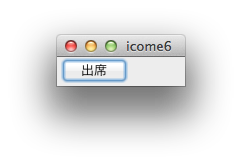
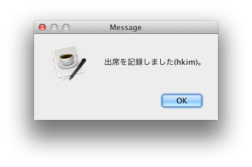

情報処理応用 ー Robocar Programming
icome
出席は icome で記録します。ピロロンは使いません
ディスプレイ左上に小さいウィンドウと出席ボタンが見えるはず。

出席ボタンを押すと出席を記録します。

icome は、
- firefox, lpcxpresso のゾンビ(死にぞこない)を黙って殺す。
- 授業時間内のみ、出席を受け付ける。休み時間はダメ。
- 受講生が授業中に作成したプログラムをひそかに回収する。
指示したプログラムが指定した場所に指定した名前でセーブしてあれば回収するが、
そうでない時は欠席扱い。成績はマイナス。
- 授業終了時、正しくログアウトすれば icome は正しく終了する。
授業中はすみの方に放置して下さい。
back